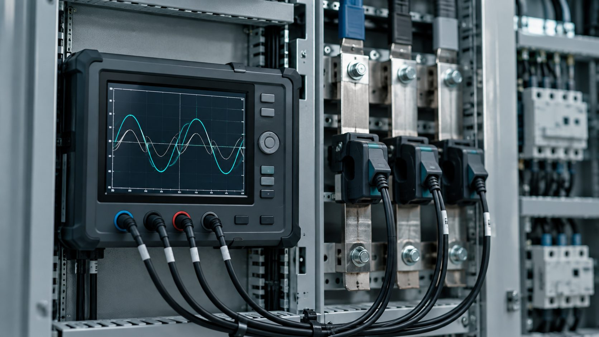
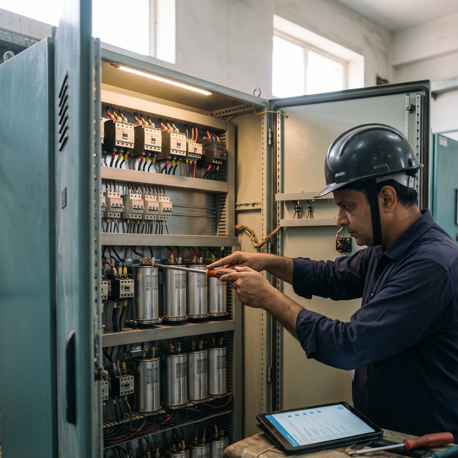

01Study
YanQ Power Quality Study
We start by measuring what your electrical system is really carrying, then benchmark it against IEEE 519-2022. From that data we offer the right solution, sized to your site.
Learn More
01Study
We start by measuring what your electrical system is really carrying, then benchmark it against IEEE 519-2022. From that data we offer the right solution, sized to your site.
Learn More02Commission
Onsite and online, we commission your power quality equipment so every panel is proven to work as designed before it is handed over.

03Maintain
An Annual Maintenance Contract (AMC) offers scheduled care for your installed correction equipment, so it keeps performing as designed, year after year.